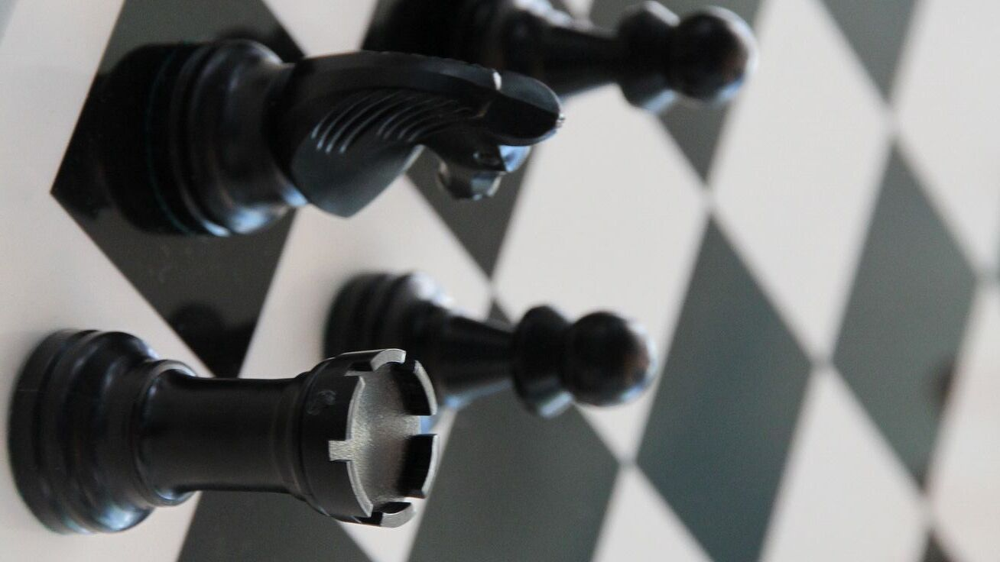
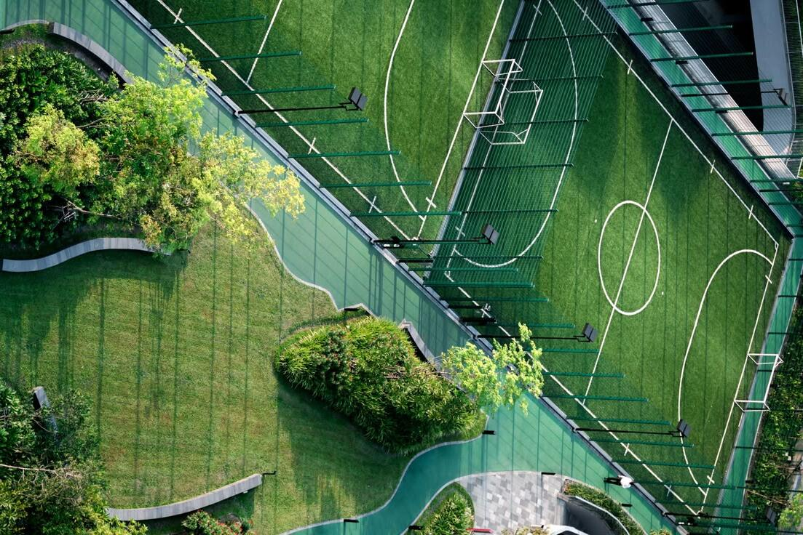

Setiap pukulan adalah peluang untuk meraih kemenangan.

Catur
Catur adalah seni yang mengekspresikan ilmu logika.

Futsal
Berikan kemampuan terbaik dan usaha terkerasmu dalam setiap pertandingan.
Rektor Sport Championship
Halo, Selamat datang mahasiswa
About us
Rektor Sport Championship adalah turnamen olahraga bergengsi yang dirancang untuk merangkul semangat kompetisi dan sportivitas di kalangan mahasiswa, serta atlet muda. Dengan tujuan untuk menginspirasi generasi baru dalam mencapai prestasi terbaik di bidang olahraga, kami menyelenggarakan berbagai kompetisi multi-disiplin, mulai dari badminton, catur, dan futsal.
Sebagai platform yang menjunjung tinggi nilai kerja sama tim, fair play, dan semangat juang, Rektor Sport Championship bertujuan untuk menciptakan ruang di mana atlet muda bisa mengembangkan keterampilan, memperluas jaringan, dan memupuk persahabatan yang dibangun di atas landasan sportivitas. Kami percaya bahwa melalui kompetisi sehat, kita bisa membangun karakter dan mental juara yang akan bermanfaat dalam kehidupan sehari-hari.